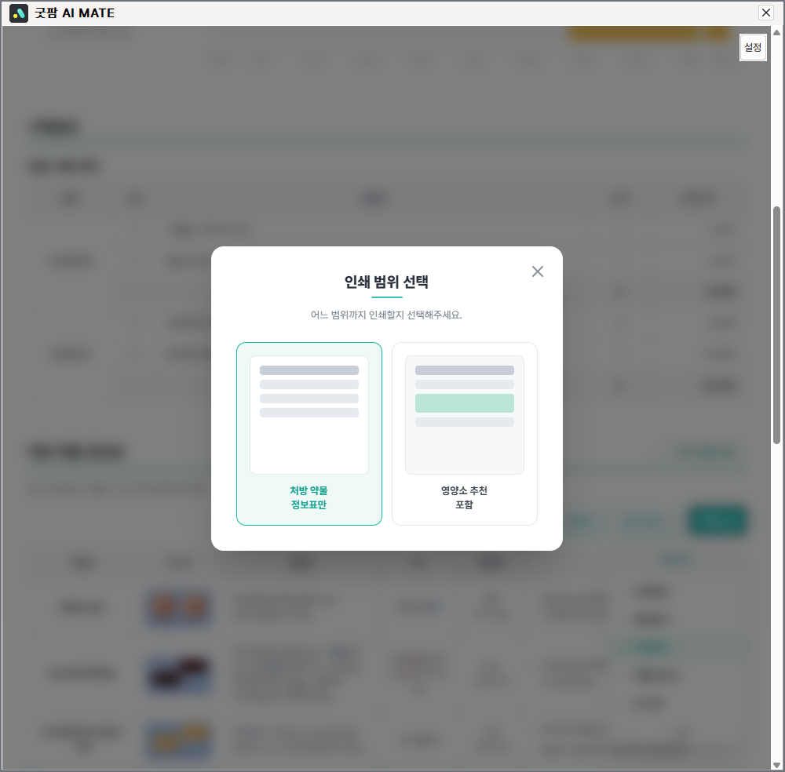
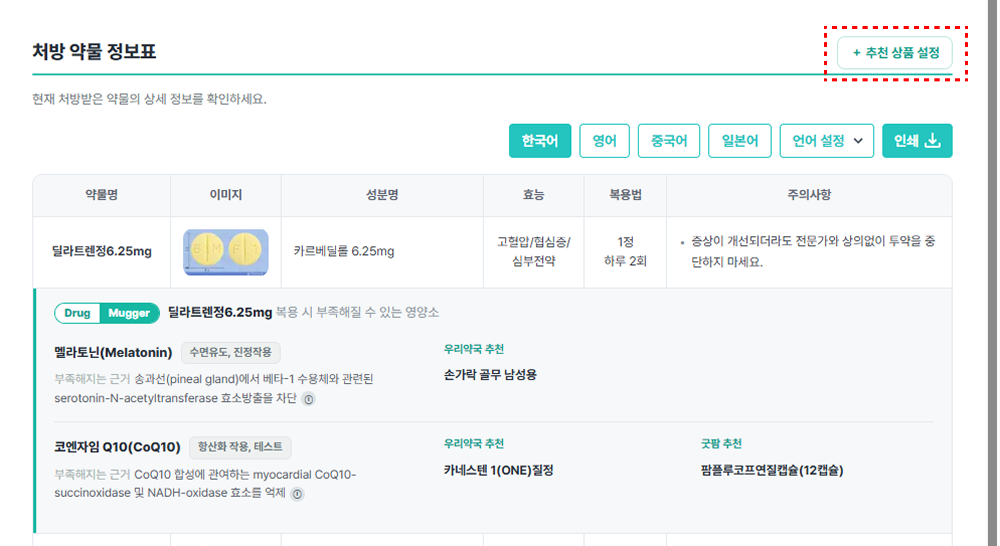

AI MATE 안내서
AI MATE는 선택한 처방 환자를 웹 기반 AI가 분석해 주는 기능입니다. 고객정보부터 약력·구매 이력, 처방 약물 정보, AI 상담까지 한 화면에서 위에서 아래로 확인하며, 처방 약물별로 부족해질 수 있는 영양소와 추천 상품(드럭머거)도 함께 볼 수 있습니다.
1AI MATE 화면 열기
굿팜 클라이언트 3.0 AI 차트에서 분석할 처방을 선택한 뒤, 조제 상세정보 영역의 AI MATE 버튼을 누르면 AI MATE 화면이 열립니다.
- AI 차트에서 처방을 선택하고 [AI MATE]를 누릅니다.왼쪽 처방 목록에서 분석할 환자의 처방을 먼저 선택한 뒤, 조제 상세정보의 [AI MATE] 버튼을 누릅니다.
![예시 · AI 차트 조제 상세정보의 [AI MATE] 버튼](img/aimate/mate/aichart-btn.png)
[AI MATE] 버튼을 누르면 선택한 환자의 처방 기록을 기반으로 분석한 내용이 한 화면에 표시됩니다.

2화면 구성 한눈에 보기
AI MATE는 하나의 화면으로 되어 있습니다. 기본 순서는 아래와 같으며, 화면 오른쪽 위 설정에서 순서를 바꿀 수 있습니다.
오른쪽 [바로가기]로 빠르게 이동합니다
화면 오른쪽의 바로가기 패널에서 고객정보 · 약력관리 · 구매정보 · 약물 정보표 · AI 상담을 누르면 해당 영역으로 바로 이동합니다. 지금 보고 있는 영역은 민트색으로 표시되고, ∧ 접기로 패널을 접을 수 있습니다.
![예시 · 화면 오른쪽 [바로가기] 패널](img/aimate/mate/quicknav.png)
3고객정보
환자의 기본 정보와 약국이 남긴 메모를 확인하는 영역입니다.
- 성명 · 연령(성별) · 최근 처방일 · 약력관리 이력을 한 줄로 확인합니다.
- 특이사항에는 동의 여부, 타과 복용, 연락처 등 약국이 남긴 메모가 표시됩니다.

4약력관리
AI 약력관리 분석은 환자의 과거 처방 이력을 효능군별로 정리해 보여주는 영역입니다. 기간별 처방 추이에서 어떤 약을 언제부터 얼마나 복용했는지 한눈에 확인합니다.
- 효능군(고혈압약 · 당뇨약 · 고지혈증약 · 소염진통제 등)별로 묶여 있고, 약물마다 언제부터 얼마나 복용했는지 가로 막대로 표시됩니다.
- 가로축은 반기 단위(예: 24.H1 · 24.H2)라서, 장기 복용 약과 최근 시작한 약을 한눈에 구분할 수 있습니다.
- 위쪽 범례에서 어떤 색이 어떤 효능군인지 확인합니다.

5구매정보
환자가 약국에서 구매한 상품 구매 이력을 확인하는 영역입니다.
- 일자 · 상품명 · 수량 · 판매금액이 표로 표시되고, 일자별 합계가 함께 나옵니다.
- 최근 순으로 정렬되며, 최근 이력만 먼저 표시됩니다. 아래 ▼ 더보기를 누르면 전체가 펼쳐집니다.

6처방 약물 정보표
현재 처방받은 약물의 상세 정보를 확인하는 영역입니다.
- 표에는 약물명 · 이미지 · 성분명 · 효능 · 복용법 · 주의사항이 표시됩니다.
- 언어 선택 — 총 10개 언어를 지원합니다. 기본은 한국어 · 영어 · 중국어 · 일본어가 노출되며, 나머지 언어(베트남어 · 태국어 · 러시아어 등)는 언어 설정 ∨에서 추가합니다.

인쇄
인쇄 ⬇ 를 누르면 인쇄 범위를 선택합니다. 처방 약물 정보표만 인쇄하거나, 영양소 추천을 포함하여 인쇄하실 수 있습니다.

드럭머거 & 추천 상품
각 약물 행 아래에 드럭머거 & 추천 상품 영역이 이어집니다. (상세 내용은 PART B · 추천 상품 — 드럭머거 & 추천 상품 섹션 참고)

7AI 상담
화면 맨 아래에서 현재 처방 내용을 바탕으로 궁금한 점을 물어볼 수 있습니다.
궁금한 내용을 입력합니다
입력창에 약 복용법 · 부작용 · 상호작용 등 궁금한 내용을 직접 입력합니다. 현재 처방 약물을 기준으로 답변이 이어집니다.

추천 질문 버튼으로 바로 물어봅니다
자주 쓰는 질문은 추천 질문 버튼으로 준비되어 있습니다 — 부작용이 궁금해요 / 다른 약과 함께 먹어도 되나요? / 복용법을 다시 알려주세요 / 복용을 깜빡했을 때는 어떻게 하나요? / 음식과 함께 먹어도 되나요? 버튼을 누르면 그대로 질문이 전달됩니다.

답변은 복약지도 참고용입니다
답변에는 처방 약물의 성분 중복·상호작용·주의점이 함께 정리됩니다. AI 답변은 부정확할 수 있는 복약지도 참고용이므로, 환자 상태와 복용 중인 약을 확인한 뒤 최종 판단은 약사님이 해 주세요.

8AI MATE 추천 상품이란?
환자의 처방 약물을 바탕으로, 그 약을 복용할 때 부족해질 수 있는 영양소와 이를 보충할 추천 상품을 함께 보여주는 상담 참고 기능입니다.
두 가지 추천 상품
| 구분 | 무엇인가요? | 누가 정하나요? |
|---|---|---|
| 우리약국 추천 상품 | 우리 약국이 직접 골라 등록한 상품 | 약국(굿팜 약국용 관리자 웹페이지의 굿팜 솔루션 탭에서 설정) |
| 굿팜 추천 상품 | 굿팜이 기본으로 제공하는 상품 | 굿팜(약국은 수정 불가) |
굿팜 클라이언트 3.0 AI 차트 > AI MATE 화면에서는 우리약국 추천 상품이 굿팜 추천 상품보다 먼저 표시됩니다.

9AI MATE 화면에서 어디에 보이나요?
처방 약물 정보표에서, 각 처방 약물 바로 아래에 추천 영역이 자동으로 표시됩니다.
화면에 보이는 정보
- 이 약을 복용할 때 부족해질 수 있는 영양소
- 그 영양소가 부족해지는 이유(상담 참고 설명)와 근거
- 영양소별 우리약국 추천 상품과 굿팜 추천 상품
근거는 약물–영양소 상호작용을 다룬 문헌 데이터(관련 논문)를 기반으로 하며, 근거 문장 옆 ⓘ에 마우스를 올리면 해당 참고문헌이 표시됩니다.
추천 상품 정보는 조회 전용입니다. AI MATE 화면에서는 추천 정보를 확인만 할 수 있고, 추천 상품의 추가·수정은 관리자 웹페이지에서 합니다.
10추천 상품은 언제 표시되나요?
영양소마다, 추천 상품이 하나라도 있을 때만 AI MATE 화면에 해당 영양소 블록이 표시됩니다.
| 상황 | AI MATE 표시 | 설명 |
|---|---|---|
| 우리약국 추천만 있음 | 표시됨 | 우리약국 추천 상품이 표시됩니다. |
| 굿팜 추천만 있음 | 표시됨 | 굿팜 추천 상품이 표시됩니다. |
| 둘 다 있음 | 표시됨 | 우리약국 → 굿팜 순서로 함께 표시됩니다. |
| 둘 다 없음 | 표시 안 됨 | 해당 영양소 블록이 나타나지 않습니다. (정상) |
| 노출 중지(OFF) | 표시 안 됨 | 굿팜에서 잠시 노출을 중지한 상태입니다. (정상) |
| 시스템 오류 | 오류 화면 | “추천 정보를 불러오지 못했습니다” 오류 화면이 표시됩니다. |
11우리약국 추천 상품은 어디서 설정하나요?
관리자 웹페이지에서 설정합니다. 영양소별로 우리 약국이 권하고 싶은 상품을 직접 등록할 수 있습니다.
AI MATE 화면의 ‘처방 약물 정보표’ 우측 상단 [＋ 추천 상품 설정] 버튼을 누르면 관리자 웹페이지로 바로 이동합니다. 따로 주소를 입력해 접속하지 않아도 됩니다.



설정 방법
- 영양소 목록에서 설정할 영양소를 선택합니다.
- 우리약국 추천 상품을 등록합니다.영양소마다 최대 3개까지 등록할 수 있고, 순서도 바꿀 수 있습니다.
- 저장하면 AI MATE 화면에 반영됩니다.
- [＋ 우리약국 추천 상품 추가] 버튼을 누르면 상품 추가 모달이 출력됩니다.
- 굿팜 추천 상품은 조회만 가능합니다. 약국에서는 수정할 수 없으며, 굿팜이 관리합니다.
12영양소 노출 중지(OFF)는 무슨 뜻인가요?
‘노출 중지(OFF)’는 해당 영양소만 AI MATE 화면에 잠시 보이지 않게 한 상태입니다. AI MATE 기능 전체가 꺼지는 것은 아닙니다.
- 노출 ON/OFF는 굿팜이 관리하며, 약국에서는 변경할 수 없습니다.
- 해당 영양소 블록만 AI MATE 화면에 보이지 않습니다.
- 관리자 웹페이지에서는 그대로 확인하고, 추천 상품을 미리 등록·수정할 수 있습니다.
- 다시 노출이 켜지면(ON), 저장해 둔 상품이 그대로 AI MATE 화면에 표시됩니다.
즉, 노출이 꺼져 있어도 미리 준비해 둘 수 있습니다. 화면 하단에도 “지금 등록·수정한 설정값은 노출이 재개되면 그대로 사용됩니다”라는 안내가 표시됩니다.

13추천 상품이 안 보일 때
추천 상품이 보이지 않는다고 해서 항상 오류는 아닙니다. 대부분은 정상적인 미표시이며, 아래 순서로 확인하면 됩니다. (어떤 경우에 표시되는지는 10번 참고)
- 다른 약물에는 추천이 보이는지 확인합니다.추천 상품이 등록된 약물만 블록이 표시됩니다. 일부 약물에만 안 보이면 정상입니다.
- 관리자 웹페이지에서 해당 영양소를 확인합니다.우리약국 추천 상품·굿팜 추천 상품이 모두 없거나, 굿팜이 노출을 중지(OFF)한 상태면 표시되지 않습니다.
- 권하고 싶은 상품을 등록합니다.관리자 웹페이지에서 우리약국 추천 상품을 등록하면 다음 조회부터 표시됩니다.
- 오류 화면이 뜨면 굿팜에 문의합니다.“추천 정보를 불러오지 못했습니다” 오류 화면이 표시될 때만 시스템 오류입니다.

자주 묻는 질문
마지막으로 꼭 기억할 점
- AI MATE는 한 화면입니다. 기본 순서는 고객정보 → 약력관리 → 구매정보 → 처방 약물 정보표 → AI 상담이며, 오른쪽 위 [설정]에서 순서를 바꿀 수 있습니다.
- 영역 이동은 화면 오른쪽 [바로가기] 패널로 합니다.
- 추천 상품 정보는 조회 전용입니다. AI MATE 화면에서 확인만 하고, 추가·수정은 관리자 웹페이지에서 합니다.
- 우리약국 추천 상품은 관리자 웹페이지에서 설정합니다. (영양소별 최대 3개)
- 우리약국 추천 상품이 굿팜 추천 상품보다 먼저 표시됩니다.
- 굿팜 추천 상품과 영양소 노출 ON/OFF는 굿팜이 관리합니다. (약국은 수정 불가)
- AI 상담 답변은 참고용이며, 최종 판단은 약사님이 합니다.